Part A.0: Setup
In Part A, we use the DeepFloyd IF 2 stage diffusion model. To use the model, we had to generate a prompt embedding (a 4096 dimensional vector in our case). Some of the text prompts we came up with are the following:
- Sand Planet Hatsune Miku
- end of the world as we know it
- steampunk machination
Using the seed 100 and two settings for num_inference_steps, we generated the following images:
num_inference_steps=20
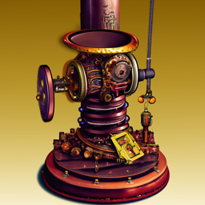
num_inference_steps=100
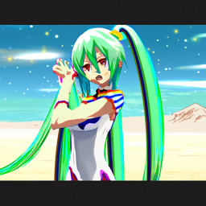
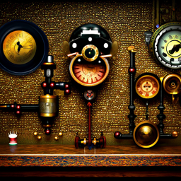
Part A.1: Sampling Loops
A.1.1 The Forward Process
In this section, we implement the forward process, taking a clean image and obtaining a noisy one by sampling from a Gaussian with mean \(\sqrt{\bar\alpha_t}x_0\) and variance \((1 - \bar\alpha_t)\) \[x_t = \sqrt{\bar\alpha_t} x_0 + \sqrt{1 - \bar\alpha_t} \epsilon \quad \text{where}~ \epsilon \sim N(0, 1)\] where \(x_0\) is the clean image and \(x_t\) is the noisy one. To thest this, I use an image of the Campanile image, resized to 64x64 and applied the forward process using the provided alphas_cumprod from DeepFloyd

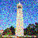
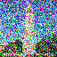
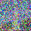
A.1.2: Classical Denoising
We then attempted to denoise the noisy campanile images using classical methods: Gaussian blur filtering with carying kernel sizes and standard deviations. The results are shown below.
.png)
.png)
.png)
A.1.3: One-Step Denoising
We then used the pretrained diffusion model to denoise. The Stage 1 UNet from DeepFloyd can predict the noise in the image given the noisy image, the timestep, and the text-conditioning embedding (in our case "a high quality photo"). Using the noise it predicts, we can estimate the clean image as follows: \[\hat{x}_0 = \frac{x_t - \sqrt{1 - \bar\alpha_{t}}\, {\epsilon}}{\sqrt{\bar\alpha_{t}}}\] We followed the followng procedure for the 3 noisy images from A.1.2 (t = [250, 500, 750]):
- Use your forward function to add noise to your Campanile.
- Estimate the noise in the new noisy image, by passing it through stage_1.unet
- the noise from the noisy image to obtain an estimate of the original image.
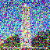
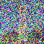
A.1.4: Iterative Denoising
One step denoising is certainly better than a Gaussian blur filter, but it struggles at high noise levels. Thus, we implemented iterative denoising to remedy this. Rather than denoising all in one step, we remove a little bit of noise at a time. Starting at timestep 1000, we iteratively step until we reach timestep 0. Although stepping 1 timestep at a time would probably give best results, we do not have the computational time nor money, so we skip some steps. Starting at t=990, we step down 30 steps at a time until we reach 0. To predict the slightly less noisy image at the next step, we followed the equation \[x_{t'} = \frac{\sqrt{\bar\alpha_{t'}}\beta_t}{1 - \bar\alpha_t} x_0 + \frac{\sqrt{\alpha_t}(1 - \bar\alpha_{t'})}{1 - \bar\alpha_t} x_t + v_\sigma\] Where:
- \(x_t\) is your image at timestep
- \(x_{t'}\) is your noisy image at timestep \(t'\) where \(t' < t\) (less noisy)
- \(\bar\alpha_t\)is defined by alphas_cumprod, from the model.
- \(\alpha_t = \frac{\bar\alpha_t}{\bar\alpha_{t'}}\)
- \(\beta_t = 1 - \alpha_t\)
- \(x_0\) is our current estimate of the clean image using one-step denoising
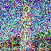
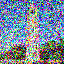
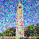
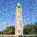
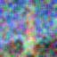
A.1.5: Diffusion Model Sampling
Another thing we can try is starting with pure noise and i_start=0 which is equivalent to starting from t=990. This will denoise noise and essentially hallucinate an image. Using the prompt "a high quality photo", the diffusion model created the following images:
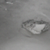
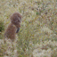
A.1.6: Classifier-Free Guidance (CFG)
The results are pretty cool, but to be honest, I can't make heads or tails of what some of the images are. To improve image quality, we can use something called Classifier-Free Guidance (CFG). In CFG, we compute both a conditional and an unconditional noise estimate. We denote these \(\epsilon_c\) and \(\epsilon_u\). Then, we let our new noise estimate be: \[\epsilon = \epsilon_u + \gamma (\epsilon_c - \epsilon_u)\] Where \(\gamma\) is a tunable parameter. Notice that for \(\gamma=0\), we get an unconditional noise estimate, and for \(\gamma=1\) we get the conditional noise estimate. When \(\gamma>1\) we get higher quality images mysteriously. To get the unconditional noise estimate, we used a null prompt embeddign to the model. Using the conditional prompt "a high quality photo" and \(\gamma=7\) we obtained the following results
A.1.7.0 Image-to-image translation
Now, let's do something fun, let's use the CFG to edit an image. We can add noise to an image and use the CFG to denoise the image. This causes to hallucinate to fill in the gaps. Using the prompt "a high quality photo" and noise levels [1, 3, 5, 7, 10, 20] (corresponding to indices of our strided timesteps list, so larger number correspond to less noisy images) we generated the following images:
A.1.7.1
We then performed the same procedure expept this time with web images and doodles.
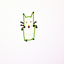
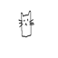
A.1.7.2
We can use the same procedure to implement inpainting. Given an image , and a binary mask, we can create a new image that has the same content where the mask is 0, but new content wherever it is 1. To do this, we can run the diffusion denoising loop. But at every step, after obtaining the prediction, we force the prediction to have the same pixels as the original image where the mask is 0. Essentially, we leave everything inside the edit mask alone, but we replace everything outside the edit mask with our original image -- with the correct amount of noise added for timestep. Using this procedure, and the same prompt as earlier, we obtained the following:


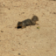
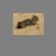
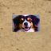
A.1.7.3: Text-Conditional Image-to-image Translation
You might be wondering, "How come section A.1.7 is so long?" Boy do I wish I had an answer to that. You've made it to the last part of this section! All our previous images we generated using the prompt "a high quality image", now let's try it with new prompts
End of the world as we know it
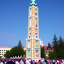
Clockwork machination
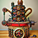
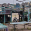
Sand planet hatsune miku
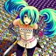
A.1.8: visual anagrams
In this part, we implement Visual Anagrams and create optical illusions with diffusion models. In this part, we will create an image that looks like a certain prompt, but when flipped upside down will reveal a different prompt. To do this, we will denoise an image \(x_t\) at step \(t\) normally with the prompt \(p_1\), to obtain noise estimate \(\epsilon_1\). But at the same time, we will flip \(x_t\) upside down, and denoise with the prompt \(p_2\), to get noise estimate \(\epsilon_2\). We can flip back, and average the two noise estimates. We then denoise with the average noise estimate. The full algorithm is described as: \[\epsilon_1 = \text{CFG of UNet}(x_t, t, p_1)\] \[\epsilon_2 = \text{flip}(\text{CFG of UNet}(\text{flip}(x_t), t, p_2))\] \[\epsilon = (\epsilon_1 + \epsilon_2) / 2\] Here are the results:
A.1.9
In this part, we will make hybrid images. We also do this by using a composite noise estimator by estimating the noise of two different promots. The composite noise is found through the following algorithm: \[\epsilon_1 = \text{CFG of UNet}(x_t, t, p_1)\] \[\epsilon_2 = \text{CFG of UNet}(x_t, t, p_2)\] \[\epsilon = f_\text{lowpass}(\epsilon_1) + f_\text{highpass}(\epsilon_2)\] We found a gaussian with a size of 15 and a sigma of 1.8 worked well.
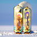
Part B: Flow Matching from Scratch
B.1.1: Implementing a UNet
We start by building a one-step denoiser using a UNet. This network takes in a noisy image and spits out a denoised one. We followed the following architecture:


B1.2.0: Using the UNet to Train a Denoiser
We will now UNet to Train a Denoiser. To do this, we train on pairs of data, the noisy image and the clean image. To generate noisy images we used the following \[z = x + \sigma \epsilon,\quad \text{where }\epsilon \sim N(0, I).\] Where z is the noisy image, x is the original and sigma is the amount of noise to be added. For our data, we are using MNIST digits. Here is the noising process for \(\sigma = [0.0, 0.2, 0.4, 0.5, 0.6, 0.8, 1.0]\)
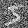
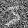
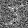
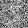
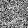
B.1.2.1: Training
Here we train a denoiser to denoise noisy image with \(\sigma = 0.5\) applied to a clean image.
Using the MNIST dataset, we create a dataloader using torch. Using a batch size of 256, 5 epochs, hidden dimension 128, MSE as the loss function and the Adam optimizer with a learning rate of 1e-4, we trained the model.
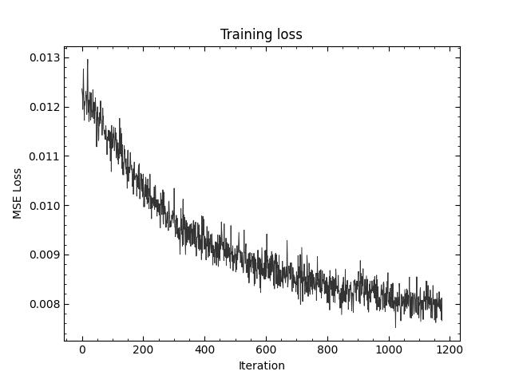
After 1 Epoch

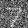
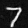

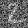
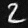
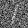
After 5 Epochs
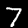
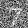
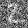
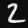
B.1.2.2:
Our denoiser was trained on MNIST digits noised with \(\sigma=5\). Let's see how it performs on different \(\sigma\)'s that it wasn't trained for.

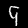
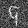
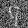
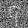
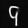
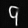
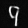
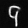
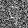
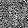
B.1.2.3: Denoising Pure Noise
Let's make it generative! In this section, we trained the previous model on pure noise and tried to map it back to the MNIST digits. Using the same loss, same number of epochs and other parameters we get a blob that looks digit-like. Because the noise is independent of the digits, we get some approximation of the average shape. Must be why alarm clocks have lights that form an 8 when they are all on.
after 1 epoch
After 5 epochs
Part B.2: Training a flow matching model
B.2.2
B.2.3
after 1 epoch
after 5 epoch
after 10 epoch
B.2.5
B.2.6
after 1 epoch
after 5 epoch
after 10 epoch
Remove Learning Rate Scheduler
The model does not perform as well without the sceduler, so what we had to do was decrease the learning rate of the model, so it is able to learn things more precisely.